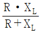
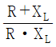
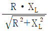
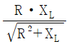
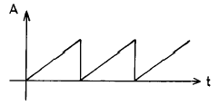
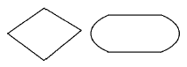
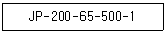

통신선로기능사 (2004-04-04 기출문제)
1과목: 전기전자개론
1. 같은 전지 n개를 직렬로 접속하여 가장 큰 전력을 부하에 공급하려면 부하저항은 전지 1개 내부 저항의 몇배인가?
- n
- １
- 1/n
- n2
(정답률: 알수없음)

2. 전류의 열작용을 표시하는 것은?
- 주울의 법칙
- 옴의 법칙
- 쿨롱의 법칙
- 플레밍의 법칙
(정답률: 알수없음)
3. 같은 사인파 교류에서 평균값은 실효값의 몇배가 되는가?
- 0.9
- √2
- 1.11
- 2/π
(정답률: 알수없음)
4. R와 L의 병렬회로 합성 임피던스는?




(정답률: 75%)
5. 자장의 세기 H를 표시하는 단위는?
- ㏝
- AT/m
- N
- J
(정답률: 60%)
6. 공기중에서 자속밀도 4[Wb/m2]의 평등 자장속에 길이 5[㎝]의 직선도선을 자장의 방향과 직각으로 놓고, 여기에 5[A]의 전류를 흐르게 하면 도선이 받는 힘은 얼마가 되겠는가?
- 1[N/m]
- 1[N]
- 1[N⦁m]
- 1[N/m2]
(정답률: 알수없음)
7. IC회로에 적합한 회로가 아닌 것은?
- L, C가 필요 없을것
- 저항값이 클것
- 출력이 작아도 될것
- 신뢰성이 중요시 될것
(정답률: 알수없음)
8. 수정진동자를 발진회로에 사용하는 중요한 이유가 아닌 것은?
- 발진주파수의 변화가 적다.
- 발진파형에 일그러짐이 적다.
- 발진주파수의 안정도가 높다.
- 주위 온도에 강하다.
(정답률: 34%)
9. 신호주파수 fs 10[㎑], 최대 주파수편이 ㅿfC 60[㎑]로 하여 80[㎑]의 반송파 fC 로 주파수 변조(FM)한 경우 주파수 대역폭 B는?
- 60[㎑]
- 70[㎑]
- 100[㎑]
- 140[㎑]
(정답률: 알수없음)
10. 최대주파수편이(ΔfC)가 80[㎑], 변조신호주파수(fs)가 7.5[㎑] 이면 변조 지수는 얼마인가?
- 7.5
- 9.5
- 10.7
- 50
(정답률: 알수없음)
11. 정전용량이 같은 콘덴서 3개를 직렬로 했을때 합성정전용량은 병렬로 연결했을 때의 몇배인가?
- 9
- 3
- 1/32
- 1/3
(정답률: 25%)
12. 부궤환 증폭의 특성중 틀린 것은?
- 주파수 특성이 좋아진다.
- 증폭도의 내부잡음이 감소한다.
- 부궤환량이 어느 정도 이상 증가하면 발진현상이 일어난다.
- 증폭도가 감소한다.
(정답률: 알수없음)
13. 교류입력신호가 0.2V에서 2V로 증폭되었을 때 증폭도는?
- 10㏈
- 20㏈
- 30㏈
- 40㏈
(정답률: 알수없음)
14. 다음 파형의 이름으로 적당한 것은?

- 톱니파
- 펄스파
- 계단파
- 정현파
(정답률: 73%)
15. 전기 회로의 회로 해석에서 테브냉의 등가 회로와 관계가 있는 것은?
- 전류원과 내부 저항의 병렬 회로로 변환
- 전류원과 내부 저항의 직렬 회로로 변환
- 전압원과 내부 저항의 병렬 회로로 변환
- 전압원과 내부 저항의 직렬 회로로 변환
(정답률: 알수없음)
2과목: 전자계산기일반
16. Computer에서의 세대라는 말은 제작년대가 아닌 변화된 Computer의 주구성 요소가 분류의 기준이 된다. 이러한 Computer의 주구성 요소가 발달한 순서대로 정리된 항을 고르시오.
- Transistor - 진공관 - 집적회로
- 집적회로 - 진공관 - Transistor
- 진공관 - Transistor - 집적회로
- 진공관 - 집적회로 - Transistor
(정답률: 알수없음)
17. 중앙처리장치(CPU)의 운영 프로그램이 위치하고 있는 기억장치는?
- 연산 장치
- 주기억 장치
- 제어 장치
- 보조기억 장치
(정답률: 알수없음)
18. 중앙처리장치의 기억장소에 대한 설명중 틀린 것은?
- 각 기억장소에는 어드레스가 할당된다.
- 1Byte는 보통 8Bit로 되어있다.
- 기억소자는 1또는 0을 기억시킨다.
- 1Bit는 1문자를 나타낸다.
(정답률: 알수없음)
19. 연산 장치의 더하기 논리 기능을 나타내는 논리회로는?
- AND
- OR
- NOR
- NOT
(정답률: 알수없음)
20. 10진수 3327을 16진수로 바꾸면?
- BF5
- 15F
- BFE
- CFF
(정답률: 37%)
21. 자기테이프에서의 기록밀도를 나타내는 것은?
- Second per inch
- Block per second
- Bits per inch
- Bits per second
(정답률: 알수없음)
22. 다음 중 누산기(Accumulator), 가산기(adder)와 관계 깊은 장치는?
- 연산 장치(Arithmetic unit)
- 제어 장치(Control unit)
- 기억 장치(Storage unit)
- 출력 장치(Output unit)
(정답률: 알수없음)
23. 다음 중 컴퓨터를 교육의 도구로 활용하는 시스템은 무엇인가?
- CAI(Computer Assisted Instruction)
- CAM(Computer Aided Manufacturing)
- FMS(Flexible Manufacturing System)
- CAD(Computer Aided Design)
(정답률: 알수없음)
24. 다음 중에서 원시 프로그램을 기계어로 번역해주는 것은 어느 것인가?
- 컴파일러 프로그램
- C-언어
- 목적프로그램
- 운영체제(Operation System)
(정답률: 알수없음)
25. 프로그램 설계를 위하여 순서도를 사용할 경우에 마름모 기호와 타원형 기호가 의미하는 것은?

- 처리와 서브루틴
- 서브루틴과 판단
- 판단과 프로시저의 시작(또는 끝)
- 프로시저의 시작(또는 끝)과 보조설명
(정답률: 70%)
26. 전송선로의 특성 임피던스와 부하저항이 같으면 부하에서의 반사계수는 얼마인가?
- 0
- 0.5
- 1
- 100
(정답률: 알수없음)
27. 케이블연관 연공작업시 파라핀(paraffin)의 사용 목적은?
- 토오치의 램프를 가열시키기 위함
- 납땜 부분을 식히며, 방수의 효과를 위함
- 지관이 움직이지 않도록 고정시키기 위함
- 납땜할 부분을 가열시키기 위함
(정답률: 알수없음)
28. Cable 심선절연의 누설량 경감법으로 맞지 않는 것은?
- 도체간격을 넓힌다.
- 절연물을 건조시킨다.
- 누설면적을 감소시킨다.
- 절연저항을 적게한다.
(정답률: 알수없음)
29. CCP 케이블에 대한 다음 설명 중 가장 거리가 먼 것은?
- 심선의 사용효율을 높이기 위하여 만들어진 케이블이다.
- 케이블 심선의 절연체는 착색한 PE로 되어있다.
- 케이블의 차폐효과를 높이기 위하여 특수 처리된 케이블이다.
- 심선의 식별을 용이하게 하고 대조노력을 경감하는 효과가 있는 케이블이다.
(정답률: 34%)
30. 멀티미디어 서비스의 수용을 위하여 16[MHz] 이상의 전송대역을 가지는 구내케이블로 가장 적합한 것은?
- 폼스킨(FS)케이블
- 피브이씨(PVC)케이블
- 시시피(CCP)케이블
- 유티피(UTP)케이블
(정답률: 55%)
3과목: 통신선로일반
31. 기간통신역무 중 전화역무의 종류가 아닌 것은?
- 시내전화역무
- 구내전화역무
- 시외전화역무
- 국제전화역무
(정답률: 37%)
32. 전화국 수가 30개인 복국지에서 국간 상호간의 중계선을 망형으로 결선한다면 중계선 수는?
- 140
- 235
- 340
- 435
(정답률: 알수없음)
33. 광섬유 통신케이블의 장점이 아닌 것은?
- 전기적 유도 방해가 적다.
- 선로 잡음 제거가 용이하다.
- 다중통신이 가능하다.
- 중계기(Repeater)가 거의 필요 없다.
(정답률: 알수없음)
34. 전화 케이블에 장하를 해서 사용하는데 이 장하를 하는 이유는?
- 케이블을 보호하기 위하여
- 케이블을 교차시키기 위하여
- 케이블의 누화를 방지하기 위하여
- 케이블의 전송손실을 보상하기 위하여
(정답률: 알수없음)
35. 폼스킨(F/S) 케이블에 주입되는 쩨리(Jelly)의 구비조건과 가장 거리가 먼 것은?
- 방습성이 있어야 한다.
- 접착력이 대단히 커야 한다.
- 유전손실이 낮아야 한다.
- 전기적으로 체적저항이 커야 한다.
(정답률: 알수없음)
36. 다음 장비의 용도 중 틀린 것은?
- 랏싱기는 가공 케이블 가설시에 사용된다.
- 랫핑기는 짬버선 배선시에 사용된다.
- 선통기는 가공케이블 접속시에 사용된다.
- 장선기는 강연선 가설시에 사용된다.
(정답률: 알수없음)
37. 동시에 고장 발생된 케이블중 제일 먼저 수리해야할 케이블은?
- 가입자 케이블
- 피이더 케이블
- 예비 케이블
- 국간중계 케이블
(정답률: 84%)
38. 다음은 열수축관의 약호이다. 여기에서 "1"은 무엇을 나타내는가?

- 밸브 부착품
- 심선접속부의 길이
- 케이블의 최소외경
- 열수축관의 종류
(정답률: 40%)
39. CATV 등에 이용되는 동축 케이블의 설명으로 적합하지 않은 것은?
- 고주파 누화 특성이 양호하다.
- 평형형 선로에 비해 전송손실이 적다.
- 외부도체의 내전압이 매우 낮다.
- 중심도체의 도체저항이 매우 적다.
(정답률: 22%)
40. 페란티(ferranti) 현상이란?
- 수신단의 신호전압 절대값이 송신단의 신호전압 절대값보다 크게 되는 현상
- 서로 성질이 다른 두 금속을 접합하면 열기전력을 발생하는 현상
- 송신단의 신호전류는 송신단의 신호전류값의 평방근에 반비례한다.
- 환상 소레노이드 중앙에 발생하는 역기전력에 관한 현상
(정답률: 10%)
41. 고층건물의 옥내배선에 주로 사용되는 배관은?
- 도관
- 석면 시멘트관
- 경질 PVC관
- 콘크리트관
(정답률: 알수없음)
42. 다음 선로정수 중 2차정수는 어느 것인가?
- 저항
- 감쇄량
- 정전용량
- 인덕턴스
(정답률: 알수없음)
43. 특성 임피던스가 동일한 두회선 사이의 누화전류를 측정하였던바 통화전류 20[㎃]에 대해 누화전류는 0.2[㎃]이었다. 이 두회선 사이의 누화량은?
- 10[㏈]
- 20[㏈]
- 30[㏈]
- 40[㏈]
(정답률: 알수없음)
44. 광섬유 케이블의 중심지지선 또는 폴리에틸렌 외피에 있는 철선(Steel wire)의 용도는 무엇인가?
- 포설용 인장선
- 전화국간 연락선
- 케이블의 경보선
- 중계용 급전선
(정답률: 80%)
45. 다음 중 전력유도와 관계가 없는 사항은?
- 송전선
- 고성능건전지
- 전기철도
- 전자계
(정답률: 80%)
4과목: 선로설비기준
46. 전기통신역무에 관한 설명으로 가장 적합한 것은?
- 전기통신설비에 사용하는 장치, 기기, 부품, 선조 등을 말한다.
- 전기통신사업에 제공하기 위한 전기통신 인력을 말한다.
- 전기통신설비를 이용하여 타인의 통신을 매개하거나 전기통신설비를 타인의 통신용으로 제공하는 것을 말한다.
- 전기통신설비를 대여하거나 제공하는 사업을 말한다.
(정답률: 알수없음)
47. 다음 중 전기통신사업자는?
- 대통령
- 정보통신부장관
- 한국통신
- 정보통신공사업자
(정답률: 9%)
48. 선로설비의 기기 오동작 유도종전압의 제한치는?
- 25[V]
- 20[V]
- 15[V]
- 10[V]
(정답률: 30%)
49. 선로설비의 회선당 평가잡음전압은 다른 전기통신설비를 접속하지 않은 상태에서 얼마이어야 하는가?
- 1[mV]이하
- 5[mV]이하
- 100[mV]이하
- 1[V]이하
(정답률: 알수없음)
50. 전기도체 등으로 300[V] 이상을 전력을 송전하거나 배전하는 전선을 전기통신설비의 기술기준에서 무엇이라고 하는가?
- 약전류전선
- 중전류전선
- 강전류전선
- 초전류전선
(정답률: 60%)
51. 한국통신에서 발주하는 광섬유케이블의 포설공사를 수급할 수 있는 공사업자는?
- 기간통신공사업자
- 별종광통신공사업자
- 정보통신공사업자
- 별종통신선로공사업자
(정답률: 59%)
52. 다음 중 절대 데시벨에 관한 가장 적합한 설명은?
- 하나의 전력을 1[mW]에 대한 대수비를 표시한 것을 말하며 그 단위는 [dBm]으로 한다.
- 전송계를 600[Ω]계로 하고 그 전송계를 주파수 800[Hz]에서 측정한 때의 동작감쇠량을 말하며 그 단위는 [dBm]으로 한다.
- 가입자 전화기 단자로부터 가입자 선로를 통하여 전화교환국 주배선반까지의 동작감쇠량을 말하며 그 단위는 [dB]로 한다.
- 전화기의 송화당량, 가입자의 선로손실, 전류공급손, 발신국의 국내손실의 1/2을 모두 합한 것을 말하며 그 단위는 [dB]로 한다.
(정답률: 20%)
53. 건전한 정보문화를 창달하고 전기통신의 올바른 이용환경을 조성하기 위하여 설립한 기구는?
- 한국정보문화센타
- 정보통신정책심의회
- 통신위원회
- 정보통신윤리위원회
(정답률: 알수없음)
54. 전기통신설비의 기술기준에서 정의하는 저주파수는?
- 300[Hz] 미만의 주파수를 말한다.
- 300[Hz] 이상 3400[Hz] 이하의 주파수를 말한다.
- 3400[Hz] 이상 5000[Hz] 이하의 주파수를 말한다.
- 5000[Hz] 이상의 주파수를 말한다.
(정답률: 알수없음)
55. 다음 구내통신선로 설비에 있어 선로의 상호간, 대지간 등에 절연저항의 규정치는?
- 직류 500[V]의 절연저항계로 측정하여 10[㏁] 이상이어야 한다.
- 교류 500[V]의 절연저항계로 측정하여 10[㏁] 이하이어야 한다.
- 교류 250[V]의 절연저항계로 측정하여 10[㏁] 이상이어야 한다.
- 직류 250[V]의 절연저항계로 측정하여 10[㏁] 이하이어야 한다.
(정답률: 알수없음)
56. 다음 중 미리 정보통신부 장관에게 신고한 후 설치 또는 변경하여야 할 중요한 전기통신설비가 아닌 것은?
- 해저 광케이블
- 위성통신지구국 송수신장치
- 국제관문국 교환기
- 구내통신설비
(정답률: 알수없음)
57. 정보통신공사업의 등록기준에 해당되지 않는 것은?
- 공사용 기기
- 기술능력
- 자본금
- 기타 필요한 사항
(정답률: 70%)
58. 감리원의 자격요건중 인정기술자인 경력자는 공사업무를 몇 년 이상 수행하여야 중급감리원의 자격에 해당하는가?
- 3년
- 5년
- 10년
- 20년
(정답률: 알수없음)
59. TMN(중앙집중 운용 보전망)의 5개 기능 분야가 아닌 것은?
- 성능 관리 분야
- 장애 관리 분야
- 구성 관리 분야
- 설비 관리 분야
(정답률: 40%)
60. 통신센터 및 전산실의 환경조건 중에서 가장 적합한 온도의 허용한계는?
- 5℃ ∼ 10℃
- 10℃ ∼ 20℃
- 16℃ ∼ 28℃
- 20℃ ∼ 32℃
(정답률: 30%)
전지 n개를 직렬로 접속하면 전압은 n배가 되고, 내부 저항은 그대로 유지됩니다. 따라서 부하저항을 전지 1개 내부 저항의 몇배로 설정하느냐에 따라 전력이 달라집니다.
부하저항이 전지 1개 내부 저항의 n배라면, 전류는 1/n배가 되고, 전력은 (n/n2)배가 됩니다. 이는 1/n만큼 감소한 값이므로, 부하저항을 전지 1개 내부 저항의 n배로 설정하면 가장 큰 전력을 공급할 수 있습니다. 따라서 정답은 "n"입니다.